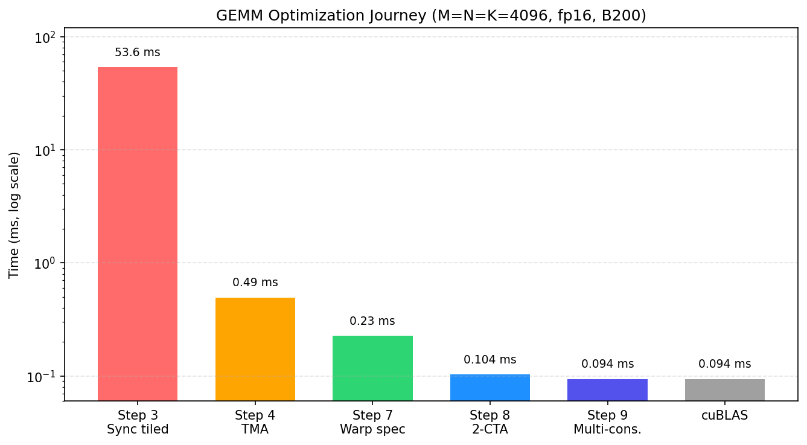

使用 Warp Specialization 和 Cluster 扩展 GEMM#
概览
上一章的 pipelined GEMM 仍由一个 warpgroup 依次完成 load、MMA 和 writeback，本章将消除这个串行瓶颈。
第 7 步为不同 warps 分配专门角色，第 8 步引入 two-CTA cluster，第 9 步增加多个 MMA consumers。
每一步都扩大协作范围并减少一个串行阶段，最终在本章测试条件下接近 cuBLAS reference。
上一章的 pipelined GEMM（使用 TMA 为 GEMM 建立 Pipeline）已经使用 TMA、software pipeline 和 persistent scheduling，但 load、MMA 和 writeback 仍由同一个 warpgroup 依次完成。三个硬件执行路径最终都要经过同一组 threads。
结果是，Tensor Cores 计算时 TMA engine 可能处于空闲状态，结果写回 memory 时计算单元又可能停下来。要让这些阶段真正并行，首先要让不同 warps 各自负责固定的工作。
本章分三步扩大协作范围：先把 TMA、MMA 和 writeback 分配给不同角色，再让两个 CTAs 协作计算一个更大的 tile，最后增加第二个 MMA consumer。前两章建立的数据路径保持不变，变化的是哪些执行单元共同使用这些数据，以及它们如何通过 barriers 交接资源。
第 7 步：Warp Specialization 与 Pipeline#
单 warpgroup kernel 中，所有 threads 都沿着 load、compute、writeback 的同一条路径执行。加载数据时 Tensor Cores 无事可做，执行计算时 TMA engine 也可能空闲。Warp specialization 将这些工作交给不同 warps，再用 software pipeline 在它们之间传递数据，使多个阶段可以同时运行。本章的 benchmark 仍使用 M=N=K=4096。
这一步改变 Scope
Scope：一个 warpgroup 依次执行 load → MMA → writeback，改为由 TMA producer、MMA consumer 和 writeback 三个角色并行工作，并通过 full/empty barriers 交接数据。
Layout：不变，继续使用第 6 步中的 SMEM stages 和 TMEM accumulator。
Dispatch：不变，仍使用 TMA loads 和
tcgen05MMA。
多级 SMEM pipeline 和 persistent ClusterPersistentScheduler2D 沿用第 5、6 步的实现，这里只改变工作分配方式。
从串行执行到并发 Pipeline#
下图比较 warp specialization 前后的调度方式。上半部分用第 4 步的串行时间线概括第 4 至 6 步尚未拆分角色时的执行方式，下半部分则表示第 7 步的并发调度。

在上半部分，同一组 threads 同时负责 load 和 MMA，一条路径工作时，另一条路径很容易空闲。第 5、6 步虽然加入了 double buffering 和 persistent scheduling，但尚未把 load 与 compute 拆成独立的 producer 和 consumer。下半部分中，TMA producer 会在 MMA consumer 计算当前 tile 时预取下一个 tile，writeback 也独立执行。Producer warp 3 发起下一次 load 时，consumer warp 0 仍可继续当前 MMA。
图中的 smem_pipe.full 和 smem_pipe.empty，在下面的实现中分别对应 tma2mma 和 mma2tma。
Load 与 MMA 之间通过两个 barriers 交接 SMEM buffer：
tma2mma（TMA → MMA）：表示 SMEM data 已经加载完成，可以由 MMA 读取。mma2tma（MMA → TMA）：表示 MMA 已经读完当前 buffer，TMA 可以用它加载下一块数据。
图中的 mma2tma 箭头会跨过一个 stage，这是由 ring buffer 的复用顺序决定的。PIPE_DEPTH=2 时，TMA Load k=0 填充 stage 0，TMA Load k=1 填充 stage 1。MMA Compute k=0 读完 stage 0 后，真正需要复用该位置的是 TMA Load k=2，而不是正在使用 stage 1 的 k=1。因此，从 MMA Compute k=0 发出的 mma2tma 信号会对应到 TMA Load k=2。
Warp 角色#
WG_NUMBER=2 时，kernel 使用两个 warpgroups，并将 load、compute 和 writeback 分配如下：
角色 |
位置 |
工作 |
|---|---|---|
TMA Producer |
Warpgroup 1，warp 3 |
持续通过 TMA 加载 A、B tiles |
MMA Consumer |
Warpgroup 1，warp 0 |
数据准备好后执行 MMA |
Writeback |
Warpgroup 0（全部 warps） |
从 TMEM 读取结果并写回 GMEM |
四个 Barriers#
三个并发角色之间需要四个 barriers。正向路径 TMA → MMA → Writeback 表示数据已经准备好；反向路径 Writeback → MMA → TMA 表示 buffer 已经释放。Barrier 名称采用 source2destination，例如 tma2mma 表示 TMA 向 MMA 发送通知。
Barrier |
类型 |
方向 |
含义 |
|---|---|---|---|
tma2mma |
|
TMA → MMA |
SMEM data 已准备好 |
mma2tma |
|
MMA → TMA |
SMEM buffer 可以复用 |
mma2ld |
|
MMA → Writeback |
TMEM results 已准备好 |
ld2mma |
|
Writeback → MMA |
TMEM 可以供下一个 tile 使用 |
Barrier 类型取决于 producer 如何报告完成。TMA load 使用带 byte counting 的 TMABar，传输完成后由 TMA hardware 更新 barrier。TMA store 的完成状态则由发起指令的 thread 通过 async group 跟踪：先执行 cp_async.bulk.commit_group()，再用 wait_group(0) 等待写入完成。MMA operation 使用 TCGen05Bar，tcgen05.commit() 会在 MMA 完成后更新该 barrier。
这里的 arrive 调用传入 cta_mask=0，因为当前 kernel 只涉及一个 CTA。第 8 步组成 cluster 后，这个参数会用来通知另一个 CTA。
PipelineState#
四个 barriers 说明 buffer 何时可用，PipelineState 则记录每个角色当前使用哪个 stage，以及应该等待该 stage 的哪个 phase。手工同时维护这两个值容易产生 off-by-one error，并导致整个 kernel deadlock。PipelineState 将它们放在同一个状态对象中：
tma_ps = PipelineState(PIPE_DEPTH, phase=1) # Producer starts ready (phase=1)
# tma_ps.stage = current stage index
# tma_ps.phase = current phase (0 or 1)
tma_ps.advance() # Advance to next stage
初始 phase 决定一个角色的第一次 wait 是直接通过还是等待。Pipeline 两端的初始状态正好相反：
phase=1（producer）：第一次wait(phase=1)看到 barrier 仍处于 phase 0，因此会直接通过。Buffer 初始为空，producer 可以立即开始填充。phase=0（consumer）：第一次wait(phase=0)看到 barrier 处于 phase 0，因此会等待。此时尚无数据，必须等 producer 完成加载后才能继续。
如果两端使用相同的初始 phase，kernel 可能 deadlock，也可能在数据尚未准备好时继续执行。
warpgroup_sync 的 Barrier ID#
Warp specialization 之后，各个 warpgroups 会执行不同的代码路径。此时不能在分支内部使用要求整个 CTA 参与的 cta_sync()，否则未进入该分支的 threads 无法到达同步点，kernel 会 deadlock。
这里改用只同步一个 warpgroup 的 warpgroup_sync(10)。GPU 提供 16 个 named barriers（ID 0–15）；当多个 warpgroups 需要分别同步时，例如第 9 步中的多个 consumers，可以使用 warpgroup_sync(wg_id + 10) 为它们分配不同 IDs，避免落到同一个 hardware barrier 上。
下面的实现使用 PIPE_DEPTH=2，这是能够让 load 与 compute 重叠的最小深度。更深的 pipeline 可以隐藏更多 memory latency，但也会占用更多 SMEM。完整 kernel 如下：
import tvm
from tvm.script import tirx as T
from tvm.script.tirx import tile as Tx
from tvm.tirx.layout import TileLayout, S, TLane, TCol, tid_in_wg
from tvm.tirx.cuda.operator.tile_primitive.tma_utils import tma_shared_layout, SwizzleMode
from tvm.tirx.lang.pipeline import TMABar, TCGen05Bar, MBarrier, PipelineState
from tvm.tirx.lang.tile_scheduler import ClusterPersistentScheduler2D
SM_COUNT = 148 # Number of SMs on NVIDIA B200 GPU
F16_SIZE = 2
def hgemm_v7(M, N, K):
a_type = tvm.DataType("float16")
b_type = tvm.DataType("float16")
d_type = tvm.DataType("float16")
acc_type = tvm.DataType("float32")
BLK_M, BLK_N, BLK_K = 128, 128, 64
K_TILES = K // BLK_K
PIPE_DEPTH = 2
WG_NUMBER = 2
A_layout = tma_shared_layout(a_type, SwizzleMode.SWIZZLE_128B_ATOM, (PIPE_DEPTH, BLK_M, BLK_K))
B_layout = tma_shared_layout(b_type, SwizzleMode.SWIZZLE_128B_ATOM, (PIPE_DEPTH, BLK_N, BLK_K))
D_layout = tma_shared_layout(d_type, SwizzleMode.SWIZZLE_128B_ATOM, (BLK_M, BLK_N))
@T.prim_func
def kernel(
A: T.Buffer((M, K), a_type),
B: T.Buffer((N, K), b_type),
D: T.Buffer((M, N), d_type),
):
T.device_entry()
bx = T.cta_id([SM_COUNT])
wg_id = T.warpgroup_id([WG_NUMBER])
warp_id = T.warp_id_in_wg([4])
lane_id = T.lane_id([32])
# --- Allocation ---
pool = T.SMEMPool()
tmem_addr = pool.alloc((1,), "uint32")
tma2mma = TMABar(pool, PIPE_DEPTH)
mma2tma = TCGen05Bar(pool, PIPE_DEPTH)
mma2ld = TCGen05Bar(pool, 1)
ld2mma = MBarrier(pool, 1)
pool.move_base_to(1024)
Asmem = pool.alloc((PIPE_DEPTH, BLK_M, BLK_K), a_type, layout=A_layout)
Bsmem = pool.alloc((PIPE_DEPTH, BLK_N, BLK_K), b_type, layout=B_layout)
Dsmem = pool.alloc((BLK_M, BLK_N), d_type, layout=D_layout)
# --- Barrier init ---
tma2mma.init(1)
mma2tma.init(1)
mma2ld.init(1)
ld2mma.init(128) # all 128 Warpgroup 0 threads arrive
pool.commit()
# --- TMEM alloc + fence ---
if wg_id == 0:
if warp_id == 0:
T.ptx.tcgen05.alloc(T.address_of(tmem_addr), n_cols=512, cta_group=1)
T.ptx.fence.proxy_async("shared::cta")
T.ptx.fence.mbarrier_init()
T.cuda.cta_sync()
tmem = T.decl_buffer(
(128, 512), acc_type, scope="tmem", allocated_addr=tmem_addr[0],
layout=TileLayout(S[(128, 512) : (1@TLane, 1@TCol)]))
# --- Tile scheduler ---
tile_scheduler = ClusterPersistentScheduler2D(
"ts", num_m_tiles=M // BLK_M, num_n_tiles=N // BLK_N,
l2_group_size=8, num_clusters=SM_COUNT)
tile_scheduler.init(bx)
m_st = T.meta_var(tile_scheduler.m_idx * BLK_M)
n_st = T.meta_var(tile_scheduler.n_idx * BLK_N)
# =============================================
# Warpgroup 1: TMA Producer (warp 3) + MMA Consumer (warp 0)
# =============================================
if wg_id == 1:
if warp_id == 3:
# === TMA Producer ===
tma_ps = PipelineState(PIPE_DEPTH, phase=1)
@T.inline
def tma_load(k_offset):
Tx.copy_async(Asmem[tma_ps.stage, :, :],
A[m_st:m_st+BLK_M, k_offset:k_offset+BLK_K],
dispatch="tma", cta_group=1,
mbar=tma2mma.ptr_to([tma_ps.stage]))
Tx.copy_async(Bsmem[tma_ps.stage, :, :],
B[n_st:n_st+BLK_N, k_offset:k_offset+BLK_K],
dispatch="tma", cta_group=1,
mbar=tma2mma.ptr_to([tma_ps.stage]))
if T.filter(lane_id, T.ptx.elect_sync()):
while tile_scheduler.valid():
for k in range(K_TILES):
mma2tma.wait(tma_ps.stage, tma_ps.phase)
tma_load(k * BLK_K)
tma2mma.arrive(tma_ps.stage,
(BLK_M * BLK_K + BLK_N * BLK_K) * F16_SIZE)
tma_ps.advance()
tile_scheduler.next_tile()
elif warp_id == 0:
# === MMA Consumer ===
mma_ps = PipelineState(PIPE_DEPTH, phase=0)
ld_ps = PipelineState(1, phase=1)
if T.filter(lane_id, T.ptx.elect_sync()):
while tile_scheduler.valid():
# Wait for TMEM to be free from previous tile's writeback
ld2mma.wait(ld_ps.stage, ld_ps.phase)
ld_ps.advance()
for k in range(K_TILES):
tma2mma.wait(mma_ps.stage, mma_ps.phase)
Tx.gemm_async(
tmem[:, :BLK_N],
Asmem[mma_ps.stage, :, :],
Bsmem[mma_ps.stage, :, :],
accum=(k != 0), dispatch="tcgen05", cta_group=1)
mma2tma.arrive(mma_ps.stage, cta_group=1, cta_mask=0)
mma_ps.advance()
# Signal results ready for writeback
mma2ld.arrive(0, cta_group=1, cta_mask=0)
tile_scheduler.next_tile()
# =============================================
# Warpgroup 0: Writeback
# =============================================
elif wg_id == 0:
wb_ps = PipelineState(1, phase=0)
reg_f16 = T.alloc_local((BLK_N,), d_type)
while tile_scheduler.valid():
# Wait for MMA results
mma2ld.wait(wb_ps.stage, wb_ps.phase)
wb_ps.advance()
T.ptx.tcgen05.fence.after_thread_sync()
# Read TMEM -> registers (warpgroup scope)
reg = T.alloc_local((BLK_N,), acc_type)
reg_wg = reg.view(128, BLK_N,
layout=TileLayout(S[(128, BLK_N) : (1@tid_in_wg, 1)]))
Tx.wg.copy_async(reg_wg[:], tmem[:, :BLK_N])
T.ptx.tcgen05.wait.ld()
# Signal TMEM free (all 128 threads arrive)
ld2mma.arrive(0, cta_id=0, pred=True)
# Cast fp32 -> fp16
Tx.cast(reg_f16[:], reg[:])
# Write to Dsmem + TMA store
Tx.copy(Dsmem[warp_id * 32 + lane_id, :], reg_f16[:])
T.ptx.fence.proxy_async("shared::cta")
T.cuda.warpgroup_sync(10)
if warp_id == 0:
if lane_id == 0:
Tx.copy_async(D[m_st:m_st+BLK_M, n_st:n_st+BLK_N],
Dsmem[:, :], dispatch="tma")
T.ptx.cp_async.bulk.commit_group()
T.ptx.cp_async.bulk.wait_group(0)
T.cuda.warpgroup_sync(10)
tile_scheduler.next_tile()
# --- Cleanup ---
T.cuda.cta_sync()
if warp_id == 0:
T.ptx.tcgen05.relinquish_alloc_permit(cta_group=1)
T.ptx.tcgen05.dealloc(tmem_addr[0], n_cols=512, cta_group=1)
return kernel
Epilogue（Writeback）#
第 7 步中 BLK_N=128，writeback warpgroup 可以一次将整个 TMEM tile 读入 registers，再发起一次 TMA store。执行顺序如下：
使用
mma2ld.wait(phase)等待 MMA 完成，再执行T.ptx.tcgen05.fence.after_thread_sync()，将后续的tcgen05.ld排在这次跨 thread 的完成通知之后。将 TMEM 读入 registers。每个 thread 接收 128 个 fp32 values；warpgroup 先执行
Tx.copy_async(reg_wg, tmem[:, :BLK_N])，再使用T.ptx.tcgen05.wait.ld()等待 load 完成。所有 128 个 writeback threads 执行
ld2mma.arrive(0, cta_id=0, pred=True)，通知 MMA 当前 TMEM 已经可以供下一个 tile 使用。cta_id=0表示更新当前 CTA 的 local barrier；pred=True表示每个 writeback thread 都执行 arrival。第 8 步会改用cta_mask通知 cluster 中的 CTAs。在 registers 中将 fp32 转换为 fp16。
将 registers 写入
Dsmem，再执行fence.proxy_async("shared::cta")和warpgroup_sync(10)。使用
cp_async.bulk.commit_group()和wait_group(0)，通过 TMA 将Dsmem写回 GMEM。
这里的 mbarrier wait 和 tcgen05.wait.ld() 负责等待两项不同的工作：前者确认 MMA 已经完成，fence.after_thread_sync() 建立跨 thread 的 tcgen05 执行顺序，后者再确认异步 TMEM load 已经写入目标 registers。
第 8 步的 BLK_N=256，第 9 步中每个 consumer 的 MMA_N=256。若仍一次读取整个 tile，每个 thread 需要同时保存 256 个 fp32 values，也就是 1024 bytes，不仅会增加 register pressure，甚至可能 spill 到 local memory，还会要求更大的 Dsmem。因此，后面两个版本将 writeback 拆成 EPI_N=64 列的 chunks。每轮只保留 EPI_N 个 fp32 registers，并发起一次较小的 TMA store，以更多 store instructions 换取可控的 register 用量。
实现中还保留了以下两点：
Persistent kernel：
bx = T.cta_id([SM_COUNT])，每个 CTA 循环处理多个 tiles。有利于 L2 locality 的调度：
ClusterPersistentScheduler2D调整 tiles 的处理顺序。
Warp specialization 与 software pipelining 的组合也常见于 CUTLASS 等高性能 GEMM 实现。
第 7 步的常见错误#
第 7 步首次让 TMA load、tcgen05 MMA 和 writeback 同时在途。第 8、9 步也会遇到相同类型的错误：barrier count 不匹配、role guard 放错位置、缺少 fence，或者 TMA store 尚未完成就复用 staging buffer。排查时应先确认每个 barrier 的等待者、通知者和 arrival count，再检查 buffer 复用前的 wait 与 fence 是否完整。
调整 pipeline depth。 第 7 步使用最小可用深度 PIPE_DEPTH=2。增加到 4 或 6，可以让 TMA producer 更早准备后续数据，从而隐藏更多 memory latency，但也会消耗更多 SMEM。B200 的每个 SM 提供 228 KB SMEM。取 BLK_M=BLK_N=128、BLK_K=64 和 fp16 时，每个 stage 中 A、B 合计占用 (128*64 + 128*64) * 2 = 32 KB，Dsmem writeback buffer 还需 32 KB。因此，PIPE_DEPTH=4 大约使用 160 KB，PIPE_DEPTH=6 则约为 224 KB，已经接近容量上限。若继续增加深度，就需要重新设计 writeback staging。
Warp specialization 已经让一个 CTA 内的不同 warps 并发工作。下一步将协作范围扩展到两个 CTAs，让它们共同计算一个更大的 tile。
第 8 步：Two-CTA Cluster#
第 7 步已经让多个 engines 重叠执行，但每个 CTA 仍独立计算自己的 \(128\times128\) tile，相邻 CTA 无法复用它加载的 operands。第 8 步让两个 CTAs 组成 cluster，并访问彼此的 shared memory。一条 cooperative tcgen05 MMA 会跨越两个 CTAs，生成一个 \(256\times256\) tile；一份 B data 也可以支持更多 MMA 计算。问题规模仍为 M=N=K=4096。
这一步改变 Scope、Layout 和 Dispatch
Scope：协作范围由一个 CTA 扩展到 cluster 中的两个 CTAs。
Layout：operand tiles 分布在两个 CTAs 的 SMEM 中；CTA 0 持有共享的 completion barrier，另一个 CTA 通过
remote_view访问它。Dispatch：MMA 使用
cta_group和cta_mask，使tcgen05以 two-CTA cooperative operation 的方式执行。
Cluster Tile 的 Shape#
cta_group=2 允许 MMA 读取两个 CTAs 分别准备的 operand tiles。每个 CTA 加载 stored B 中包含 128 行的一个 slice；转置后，这些行对应 logical B operand 的 128 个 output columns。Cooperative MMA 再将两个 slices 合并为完整 operand。下面的交互图展示两个 CTAs 的 A、B slices 如何组成一个 \(256\times256\) cluster tile：
每个 CTA 持有一个 A row slice 和一个 stored-B row slice，并通过 cluster 中的 distributed shared memory（DSMEM）读取另一个 CTA 的 stored-B slice。经过 B.T 后，两个 slices 覆盖完整的 output columns，因此两个 CTAs 共同生成一个 \(256\times256\) output tile。
本教程将 GEMM 写成 D = A @ B.T，其中 stored B 的 shape 为 N × K。两个 CTAs 对 operands 的分工如下：
A 沿 M 维切分：CTA 0 持有 A0（rows 0–127），CTA 1 持有 A1（rows 128–255）。两部分合起来共有 256 行。
Stored B 沿 N 维切分：CTA 0 加载 B rows 0–127，CTA 1 加载 B rows 128–255。由于计算使用
B.T，这两个 stored row slices 会成为 logical right-hand operand 的两个 128-column slices。使用
cta_group=2后，MMA hardware 通过 cross-CTA shared memory access 读取两个 CTAs 的 B slices，得到完整的 logical output-column 范围。两个 CTAs 共同计算一个 \(256\times256\) output tile，每个 CTA 最终写回其中一个 \(128\times256\) row stripe。
每个 CTA 仍只加载 \(128\times K\) 的 A 和 \(128\times K\) 的 B，因此 cluster 准备的 operand data 大约是单 CTA 的两倍；但它生成的 \(256\times256\) tile 所包含的 FLOPs 约为 \(128\times128\) tile 的四倍。Cooperative MMA 会让每个 CTA 的 B slice 与另一个 CTA 的 A slice 组合，从而使每个 staged-operand byte 支持约两倍的计算。算术强度由此接近翻倍，也解释了本章末尾结果表中约 2.2 倍的性能提升。
Tile 地址计算#
Cluster 成为调度单位后，tile scheduler 也按 cluster tile 计数。每个 (m_idx, n_idx) 表示一个完整的 \(256\times256\) 区域，cluster 内的两个 CTAs 再分别加载自己的 slices：
m_st = (m_idx * CTA_GROUP + cbx) * BLK_M
n_st = (n_idx * CTA_GROUP + cbx) * BLK_N
两个 CTAs 处理同一个 \(256\times256\) cluster tile。cbx 表示 CTA 在 cluster 中的位置，取值为 0 或 1。m_st 选择该 CTA 拥有的 output row stripe，n_st 选择它为 cooperative MMA 提供的 stored-B slice。Writeback 时，每个 CTA 都会写出 output 的两个 128-column halves。num_m_tiles = M // 256 和 num_n_tiles = N // 256 统计的也是 cluster tiles，而不是单 CTA tiles。
令 m_base = m_idx * 256、n_base = n_idx * 256，两个 CTAs 实际负责的数据如下：
CTA |
加载的 A slice |
加载的 stored-B slice |
写回的 D 区域 |
|---|---|---|---|
CTA 0 |
|
|
|
CTA 1 |
|
|
|
因此，cbx 在 m_st 中选择该 CTA 负责的 output rows，在 n_st 中选择它要加载的 stored-B rows。后者只是 cooperative MMA 的输入坐标，并不表示该 CTA 只负责对应的 output columns。Writeback 时，两个 CTAs 都覆盖完整的 256 个 output columns，所以 column 起点使用 n_st_epi = n_idx * 256 + no * 128，其中不含 cbx。
相比第 7 步的代码改动#
与第 7 步相比，cluster 版本主要有六处改动：
# 1. Cluster launch
cbx, cby = T.cta_id_in_cluster([CTA_GROUP, 1]) # cbx = CTA index within cluster (0 or 1)
# 2. Cooperative MMA (was cta_group=1)
Tx.gemm_async(..., cta_group=2)
# 3. Cross-CTA shared memory access
B_remote = T.ptx.map_shared_rank(Bsmem, cta_id=1)
# 4. Cross-CTA barrier
tma2mma_cta0 = T.decl_buffer(
[CTA_GROUP], "uint64",
data=T.ptx.map_shared_rank(tma2mma.ptr_to([0]), 0),
scope="shared"
)
# 5. mma2tma / mma2ld arrives go from cta_mask=0 (single CTA, Step 7)
# to cta_mask=3 (signal both CTAs in the cluster)
mma2tma.arrive(mma_ps.stage, cta_group=CTA_GROUP, cta_mask=3)
mma2ld.arrive(0, cta_group=CTA_GROUP, cta_mask=3)
# 6. Cluster sync replaces cta_sync at the end
T.cuda.cluster_sync()
Cluster 内的协作#
这些改动都来自同一件事：协作 scope 已经从单个 CTA 扩展到 cluster。具体包括：
Cluster CTA ID：
cbx表示 CTA 在 cluster 中的位置。CTA 0 处理 A rows 0–127，CTA 1 处理 rows 128–255。Remote barrier view：每个 CTA 都有自己的 SMEM 和 barriers。这里选择 CTA 0 的 barrier 作为统一协调点，cluster 中的其他 CTA 通过 remote pointer 访问它。
map_shared_rank(tma2mma.ptr_to([0]), 0)返回指向 CTA 0 barrier 的 cluster-wide pointer；TIRx 中可用tma2mma.remote_view(0)表示。后续 arrive 和 wait 都作用于 CTA 0 的这份 barrier。只由 CTA 0 发起 MMA：
cta_group=2并不表示两个 CTAs 分别发起一条 MMA。CTA 0 发出一条tcgen05.mma，hardware 执行跨越两个 CTAs 的 cooperative MMA，从两侧 SMEM 读取 operands，并将 accumulator 写入两侧 TMEM。CTA 1 不再发出相同指令，因此代码使用if cbx == 0:保护 MMA path。Multicast arrive：
tcgen05.commit(..., cta_group=2, cta_mask=3)只由 CTA 0 发出，但会通知两个 CTAs 的 barriers。cta_mask=3即二进制11，表示 CTA 0 和 CTA 1 都是目标。ld2mma的 init count：init(128 * CTA_GROUP)，两个 CTAs 的 writeback warpgroups 各有 128 个 threads，全部都要执行 arrival。Cluster-wide resource accounting：TMA arrival byte count 要包含两个 CTAs 搬运的数据，
tcgen05.alloc和tcgen05.dealloc都使用cta_group=2；释放 TMEM 前还要执行cluster_sync()，确认两侧 CTA 都已经完成访问。
完整实现如下：
def hgemm_v8(M, N, K):
a_type = tvm.DataType("float16")
b_type = tvm.DataType("float16")
d_type = tvm.DataType("float16")
acc_type = tvm.DataType("float32")
CTA_GROUP = 2
BLK_M, BLK_N, BLK_K = 128, 128, 64
MMA_M, MMA_N = 256, 256
K_TILES = K // BLK_K
PIPE_DEPTH = 4
WG_NUMBER = 2
F16_SIZE = 2 # fp16
A_layout = tma_shared_layout(a_type, SwizzleMode.SWIZZLE_128B_ATOM, (PIPE_DEPTH, BLK_M, BLK_K))
B_layout = tma_shared_layout(b_type, SwizzleMode.SWIZZLE_128B_ATOM, (PIPE_DEPTH, BLK_N, BLK_K))
D_layout = tma_shared_layout(d_type, SwizzleMode.SWIZZLE_128B_ATOM, (BLK_M, 128))
@T.prim_func
def kernel(
A: T.Buffer((M, K), a_type),
B: T.Buffer((N, K), b_type),
D: T.Buffer((M, N), d_type),
):
T.device_entry()
bx = T.cta_id([SM_COUNT])
cbx, cby = T.cta_id_in_cluster([CTA_GROUP, 1])
wg_id = T.warpgroup_id([WG_NUMBER])
warp_id = T.warp_id_in_wg([4])
lane_id = T.lane_id([32])
# --- Allocation ---
pool = T.SMEMPool()
tmem_addr = pool.alloc((1,), "uint32")
tma2mma = TMABar(pool, PIPE_DEPTH)
mma2tma = TCGen05Bar(pool, PIPE_DEPTH)
mma2ld = TCGen05Bar(pool, 1)
ld2mma = MBarrier(pool, 1)
pool.move_base_to(1024)
Asmem = pool.alloc((PIPE_DEPTH, BLK_M, BLK_K), a_type, layout=A_layout)
Bsmem = pool.alloc((PIPE_DEPTH, BLK_N, BLK_K), b_type, layout=B_layout)
Dsmem = pool.alloc((BLK_M, 128), d_type, layout=D_layout)
# --- Barrier init ---
tma2mma.init(1)
mma2tma.init(1)
mma2ld.init(1)
ld2mma.init(128 * CTA_GROUP) # both CTAs' writeback threads
pool.commit()
# --- TMEM alloc (cooperative) ---
if wg_id == 0:
if warp_id == 0:
T.ptx.tcgen05.alloc(T.address_of(tmem_addr), n_cols=512, cta_group=CTA_GROUP)
T.ptx.fence.proxy_async("shared::cta")
T.ptx.fence.mbarrier_init()
T.cuda.cta_sync()
tmem = T.decl_buffer(
(128, 512), acc_type, scope="tmem", allocated_addr=tmem_addr[0],
layout=TileLayout(S[(128, 512) : (1@TLane, 1@TCol)]))
# --- Tile scheduler (cluster tiles) ---
tile_scheduler = ClusterPersistentScheduler2D(
"ts", num_m_tiles=M // 256, num_n_tiles=N // 256,
l2_group_size=8, num_clusters=SM_COUNT // CTA_GROUP)
tile_scheduler.init(bx // CTA_GROUP)
m_idx = T.meta_var(tile_scheduler.m_idx)
n_idx = T.meta_var(tile_scheduler.n_idx)
m_st = T.meta_var((m_idx * CTA_GROUP + cbx) * BLK_M)
n_st = T.meta_var((n_idx * CTA_GROUP + cbx) * BLK_N)
# --- Cross-CTA barrier view ---
tma2mma_cta0 = tma2mma.remote_view(0)
# =============================================
# Warpgroup 1: TMA Producer (warp 3) + MMA Consumer (warp 0)
# =============================================
if wg_id == 1:
if warp_id == 3:
tma_ps = PipelineState(PIPE_DEPTH, phase=1)
@T.inline
def tma_load(k_offset):
Tx.copy_async(Asmem[tma_ps.stage, :, :],
A[m_st:m_st+BLK_M, k_offset:k_offset+BLK_K],
dispatch="tma", cta_group=CTA_GROUP,
mbar=tma2mma_cta0.ptr_to([tma_ps.stage]))
Tx.copy_async(Bsmem[tma_ps.stage, :, :],
B[n_st:n_st+BLK_N, k_offset:k_offset+BLK_K],
dispatch="tma", cta_group=CTA_GROUP,
mbar=tma2mma_cta0.ptr_to([tma_ps.stage]))
if T.filter(lane_id, T.ptx.elect_sync()):
while tile_scheduler.valid():
for k in range(K_TILES):
mma2tma.wait(tma_ps.stage, tma_ps.phase)
tma_load(k * BLK_K)
if cbx == 0:
tma2mma_cta0.arrive(tma_ps.stage,
CTA_GROUP * (BLK_M * BLK_K + BLK_N * BLK_K) * F16_SIZE)
tma_ps.advance()
tile_scheduler.next_tile()
elif warp_id == 0:
mma_ps = PipelineState(PIPE_DEPTH, phase=0)
ld_ps = PipelineState(1, phase=1)
if cbx == 0:
if T.filter(lane_id, T.ptx.elect_sync()):
while tile_scheduler.valid():
ld2mma.wait(ld_ps.stage, ld_ps.phase)
ld_ps.advance()
for k in range(K_TILES):
tma2mma.wait(mma_ps.stage, mma_ps.phase)
Tx.gemm_async(
tmem[:, :MMA_N],
Asmem[mma_ps.stage, :, :],
Bsmem[mma_ps.stage, :, :],
accum=(k != 0), dispatch="tcgen05", cta_group=CTA_GROUP)
mma2tma.arrive(mma_ps.stage, cta_group=CTA_GROUP, cta_mask=3)
mma_ps.advance()
mma2ld.arrive(0, cta_group=CTA_GROUP, cta_mask=3)
tile_scheduler.next_tile()
# =============================================
# Warpgroup 0: Writeback (256 columns in 2 x 128-column chunks)
# =============================================
elif wg_id == 0:
wb_ps = PipelineState(1, phase=0)
reg_f16 = T.alloc_local((128,), d_type)
while tile_scheduler.valid():
mma2ld.wait(wb_ps.stage, wb_ps.phase)
wb_ps.advance()
T.ptx.tcgen05.fence.after_thread_sync()
for no in T.unroll(2): # 2 chunks of 128 columns = 256 total
reg = T.alloc_local((128,), acc_type)
reg_wg = reg.view(128, 128,
layout=TileLayout(S[(128, 128) : (1@tid_in_wg, 1)]))
Tx.wg.copy_async(reg_wg[:], tmem[:, no * 128:(no + 1) * 128])
T.ptx.tcgen05.wait.ld()
Tx.cast(reg_f16[:], reg[:])
Tx.copy(Dsmem[warp_id * 32 + lane_id, :], reg_f16[:])
T.ptx.fence.proxy_async("shared::cta")
T.cuda.warpgroup_sync(10)
if warp_id == 0:
if lane_id == 0:
n_st_epi = T.meta_var(n_idx * 256 + no * 128)
Tx.copy_async(D[m_st:m_st+BLK_M, n_st_epi:n_st_epi+128],
Dsmem[:, :], dispatch="tma")
T.ptx.cp_async.bulk.commit_group()
T.ptx.cp_async.bulk.wait_group(0)
T.cuda.warpgroup_sync(10)
ld2mma.arrive(0, cta_id=0, pred=True)
tile_scheduler.next_tile()
# --- Cleanup ---
T.cuda.cluster_sync()
if warp_id == 0:
T.ptx.tcgen05.relinquish_alloc_permit(cta_group=CTA_GROUP)
T.ptx.tcgen05.dealloc(tmem_addr[0], n_cols=512, cta_group=CTA_GROUP)
return kernel
增加 arithmetic intensity 后，第 8 步在 \(4096^3\) 问题上达到 0.104 ms，相对于相同规模下耗时 70 ms 的第 1 步约快 676 倍。Kernel 此时已经逐渐接近 compute-bound。第 9 步会增加第二个 MMA consumer，让更多 Tensor Core work 同时在途。
如果第 8 步反而比第 7 步慢，应先检查新增的 cluster contracts：
TMA arrival byte count 是否为
CTA_GROUP * (BLK_M*BLK_K + BLK_N*BLK_K) * F16_SIZE。对于 \(256\times256\) cluster tile，scheduler dimensions 是否为
num_m_tiles=M//256和num_n_tiles=N//256。Writeback 是否对两个 128-column chunks 分别发起 TMA store，并在复用
Dsmem前等待每次 store 完成。
Cluster 提高了 CTAs 之间的数据复用。最后一步会增加第二个 MMA consumer，进一步提高每个 CTA 内部的计算密度。
第 9 步：Multi-Consumer Warp Specialization#
第 8 步已经让 MMA 保持忙碌，但每个 staged B tile 仍只供一个 consumer warp 使用。最后一步增加第二个 MMA consumer，让它使用另一块 A 与同一份 B tile 相乘。每个 CTA 的计算密度由此翻倍，cluster output 也从 \(256\times256\) 扩展到 \(512\times256\)。问题规模仍为 M=N=K=4096。
这一步改变 Scope 和 Layout
Scope：MMA consumer 由一个增加到两个，并通过
warp_id区分。Layout：两个 consumers 复用同一个 staged B tile；A layout 增加 consumer axis。
Dispatch：不变。
Multi-Consumer 结构#
增加第二个 consumer 后，kernel 需要两个 MMA warps，以及两个分别负责对应 accumulator 的 writeback warpgroups。设置 NUM_CONSUMER=2 和 WG_NUMBER=3 后，各个角色分配如下：
Warpgroup |
Warp |
角色 |
|---|---|---|
WG 2 |
warp 0 |
MMA consumer 0： |
WG 2 |
warp 1 |
MMA consumer 1： |
WG 2 |
warp 3 |
TMA producer：每个 stage 加载 2 个 A blocks 和 1 个 B block |
WG 0 |
全部 warps |
Consumer 0 的 writeback：读取 TMEM |
WG 1 |
全部 warps |
Consumer 1 的 writeback：读取 TMEM |
两个 consumers 分别计算不同的 M-row stripes，因此需要不同的 A blocks；它们处理的 output columns 相同，所以可以共用 B。这样，一次 B load 可以支持两倍的 MMA work，B 相对于有效 FLOPs 的加载成本也近似减半。
相比第 8 步的改动#
第二个 consumer 会让每个 stage 包含两个 A blocks，并产生两个需要分别写回的 TMEM ranges，而 B 仍由两者共享。代码需要做以下调整：
Asmem = pool.alloc((PIPE_DEPTH, NUM_CONSUMER, BLK_M, BLK_K), ...)：每个 stage 存放两个 A blocks，每个 consumer 使用一个TMA 同时加载
Asmem[stage, 0]和Asmem[stage, 1]。由于多出一个 A block，arrival bytes 改为CTA_GROUP * (NUM_CONSUMER * BLK_M * BLK_K + BLK_N * BLK_K) * F16_SIZEMMA warp 使用
warp_id选择 A block 和 TMEM rangemma2tma.init(NUM_CONSUMER)：每个 stage 都需要收到两个 consumers 的通知mma2ld和ld2mma的depth=NUM_CONSUMER：这两个对象各自包含两个 slots。Slot 0 连接 MMA warp 0 与 Warpgroup 0，slot 1 连接 MMA warp 1 与 Warpgroup 1；MMA 侧按warp_id索引，writeback 侧按wg_id索引Tile address 改为
m_st = (m_idx * NUM_CONSUMER * CTA_GROUP + cbx) * BLK_M。每个 cluster tile 沿 M 维包含NUM_CONSUMER组 consumers，因此 M offset 多出这个因子。Cluster tile 的 shape 为 \(512\times256\)，scheduler 使用num_m_tiles = M // 256 // NUM_CONSUMERWriteback 按
EPI_N分块，使每轮只有较少的 TMEM readback values 同时保存在 registers 中
完整实现如下：
def hgemm_v9(M, N, K):
a_type = tvm.DataType("float16")
b_type = tvm.DataType("float16")
d_type = tvm.DataType("float16")
acc_type = tvm.DataType("float32")
CTA_GROUP = 2
NUM_CONSUMER = 2
BLK_M, BLK_N, BLK_K = 128, 128, 64
MMA_N = BLK_N * CTA_GROUP # 256
K_TILES = K // BLK_K
PIPE_DEPTH = 4
EPI_N = 64
WG_NUMBER = 3
F16_SIZE = 2 # fp16
A_layout = tma_shared_layout(a_type, SwizzleMode.SWIZZLE_128B_ATOM,
(PIPE_DEPTH, NUM_CONSUMER, BLK_M, BLK_K))
B_layout = tma_shared_layout(b_type, SwizzleMode.SWIZZLE_128B_ATOM,
(PIPE_DEPTH, BLK_N, BLK_K))
D_layout = tma_shared_layout(d_type, SwizzleMode.SWIZZLE_128B_ATOM,
(NUM_CONSUMER, BLK_M, EPI_N))
@T.prim_func
def kernel(
A: T.Buffer((M, K), a_type),
B: T.Buffer((N, K), b_type),
D: T.Buffer((M, N), d_type),
):
T.device_entry()
bx = T.cta_id([SM_COUNT])
cbx, cby = T.cta_id_in_cluster([CTA_GROUP, 1])
wg_id = T.warpgroup_id([WG_NUMBER])
warp_id = T.warp_id_in_wg([4])
lane_id = T.lane_id([32])
# --- Allocation ---
pool = T.SMEMPool()
tmem_addr = pool.alloc((1,), "uint32")
tma2mma = TMABar(pool, PIPE_DEPTH)
mma2tma = TCGen05Bar(pool, PIPE_DEPTH)
mma2ld = TCGen05Bar(pool, NUM_CONSUMER) # depth=2, one slot per consumer
ld2mma = MBarrier(pool, NUM_CONSUMER) # depth=2, one slot per consumer
pool.move_base_to(1024)
Asmem = pool.alloc((PIPE_DEPTH, NUM_CONSUMER, BLK_M, BLK_K), a_type, layout=A_layout)
Bsmem = pool.alloc((PIPE_DEPTH, BLK_N, BLK_K), b_type, layout=B_layout)
Dsmem = pool.alloc((NUM_CONSUMER, BLK_M, EPI_N), d_type, layout=D_layout)
# --- Barrier init ---
tma2mma.init(1)
mma2tma.init(NUM_CONSUMER) # each stage expects 2 arrivals
mma2ld.init(1) # each slot gets 1 arrival
ld2mma.init(128 * CTA_GROUP) # both CTAs' writeback threads
pool.commit()
# --- TMEM alloc (cooperative) ---
if wg_id == 0:
if warp_id == 0:
T.ptx.tcgen05.alloc(T.address_of(tmem_addr), n_cols=512, cta_group=CTA_GROUP)
T.ptx.fence.proxy_async("shared::cta")
T.ptx.fence.mbarrier_init()
T.cuda.cta_sync()
tmem = T.decl_buffer(
(128, 512), acc_type, scope="tmem", allocated_addr=tmem_addr[0],
layout=TileLayout(S[(128, 512) : (1@TLane, 1@TCol)]))
# --- Tile scheduler (512x256 cluster tiles) ---
tile_scheduler = ClusterPersistentScheduler2D(
"ts", num_m_tiles=M // 256 // NUM_CONSUMER, num_n_tiles=N // 256,
l2_group_size=8, num_clusters=SM_COUNT // CTA_GROUP)
tile_scheduler.init(bx // CTA_GROUP)
m_idx = T.meta_var(tile_scheduler.m_idx)
n_idx = T.meta_var(tile_scheduler.n_idx)
m_st = T.meta_var((m_idx * NUM_CONSUMER * CTA_GROUP + cbx) * BLK_M)
n_st = T.meta_var((n_idx * CTA_GROUP + cbx) * BLK_N)
tma2mma_cta0 = tma2mma.remote_view(0)
# =============================================
# Warpgroup 2: TMA Producer (warp 3) + 2 MMA Consumers (warp 0, 1)
# =============================================
if wg_id == 2:
if warp_id == 3:
# === TMA Producer: loads 2 A blocks + 1 B block per stage ===
tma_ps = PipelineState(PIPE_DEPTH, phase=1)
@T.inline
def tma_load(k_offset):
m_st_c1 = T.meta_var(m_st + CTA_GROUP * BLK_M)
Tx.copy_async(Asmem[tma_ps.stage, 0, :, :],
A[m_st:m_st+BLK_M, k_offset:k_offset+BLK_K],
dispatch="tma", cta_group=CTA_GROUP,
mbar=tma2mma_cta0.ptr_to([tma_ps.stage]))
Tx.copy_async(Asmem[tma_ps.stage, 1, :, :],
A[m_st_c1:m_st_c1+BLK_M, k_offset:k_offset+BLK_K],
dispatch="tma", cta_group=CTA_GROUP,
mbar=tma2mma_cta0.ptr_to([tma_ps.stage]))
Tx.copy_async(Bsmem[tma_ps.stage, :, :],
B[n_st:n_st+BLK_N, k_offset:k_offset+BLK_K],
dispatch="tma", cta_group=CTA_GROUP,
mbar=tma2mma_cta0.ptr_to([tma_ps.stage]))
if T.filter(lane_id, T.ptx.elect_sync()):
while tile_scheduler.valid():
for k in range(K_TILES):
mma2tma.wait(tma_ps.stage, tma_ps.phase)
tma_load(k * BLK_K)
if cbx == 0:
tma2mma_cta0.arrive(tma_ps.stage,
CTA_GROUP * (NUM_CONSUMER * BLK_M * BLK_K + BLK_N * BLK_K) * F16_SIZE)
tma_ps.advance()
tile_scheduler.next_tile()
elif warp_id < NUM_CONSUMER:
# === MMA Consumer: warp_id selects A block and TMEM range ===
mma_ps = PipelineState(PIPE_DEPTH, phase=0)
ld_ps = PipelineState(1, phase=1)
if cbx == 0:
if T.filter(lane_id, T.ptx.elect_sync()):
while tile_scheduler.valid():
ld2mma.wait(warp_id, ld_ps.phase)
ld_ps.advance()
for k in range(K_TILES):
tma2mma.wait(mma_ps.stage, mma_ps.phase)
Tx.gemm_async(
tmem[:, warp_id * MMA_N:warp_id * MMA_N + MMA_N],
Asmem[mma_ps.stage, warp_id, :, :],
Bsmem[mma_ps.stage, :, :],
accum=(k != 0), dispatch="tcgen05", cta_group=CTA_GROUP)
mma2tma.arrive(mma_ps.stage, cta_group=CTA_GROUP, cta_mask=3)
mma_ps.advance()
mma2ld.arrive(warp_id, cta_group=CTA_GROUP, cta_mask=3)
tile_scheduler.next_tile()
# =============================================
# Warpgroup 0/1: Writeback (each reads its consumer's TMEM range)
# =============================================
elif wg_id < NUM_CONSUMER:
wb_ps = PipelineState(1, phase=0)
reg_f16 = T.alloc_local((EPI_N,), d_type)
while tile_scheduler.valid():
mma2ld.wait(wg_id, wb_ps.phase) # wait for THIS consumer
wb_ps.advance()
T.ptx.tcgen05.fence.after_thread_sync()
# Read TMEM in EPI_N=64 column chunks (4 iterations for 256 cols)
for i in T.unroll(MMA_N // EPI_N):
reg = T.alloc_local((EPI_N,), acc_type)
reg_wg = reg.view(128, EPI_N,
layout=TileLayout(S[(128, EPI_N) : (1@tid_in_wg, 1)]))
col_st = T.meta_var(wg_id * MMA_N + i * EPI_N)
col_end = T.meta_var(wg_id * MMA_N + i * EPI_N + EPI_N)
Tx.wg.copy_async(reg_wg[:], tmem[:, col_st:col_end])
T.ptx.tcgen05.wait.ld()
Tx.cast(reg_f16[:], reg[:])
Tx.copy(Dsmem[wg_id, warp_id * 32 + lane_id, :], reg_f16[:])
T.ptx.fence.proxy_async("shared::cta")
T.cuda.warpgroup_sync(wg_id + 10)
if warp_id == 0:
if lane_id == 0:
m_st_epi = T.meta_var(
(m_idx * NUM_CONSUMER * CTA_GROUP + wg_id * CTA_GROUP + cbx) * BLK_M)
n_st_epi = T.meta_var(n_idx * MMA_N + i * EPI_N)
Tx.copy_async(
D[m_st_epi:m_st_epi+BLK_M, n_st_epi:n_st_epi+EPI_N],
Dsmem[wg_id, :, :], dispatch="tma")
T.ptx.cp_async.bulk.commit_group()
T.ptx.cp_async.bulk.wait_group(0)
T.cuda.warpgroup_sync(wg_id + 10)
ld2mma.arrive(wg_id, cta_id=0, pred=True)
tile_scheduler.next_tile()
# --- Cleanup ---
T.cuda.cluster_sync()
if warp_id == 0:
T.ptx.tcgen05.relinquish_alloc_permit(cta_group=CTA_GROUP)
T.ptx.tcgen05.dealloc(tmem_addr[0], n_cols=512, cta_group=CTA_GROUP)
return kernel
运行这三个 kernels 时，可以复用第 1 步（构建 Tiled GEMM）中的 compile、run 和 check 代码，只需将 hgemm_v1 换成 hgemm_v7、hgemm_v8 或 hgemm_v9。第 8、9 步要求 M 和 N 能被对应的 cluster tile 整除，其 tile shapes 分别为 \(256\times256\) 和 \(512\times256\)；使用过小的输入时，scheduler 不会生成任何 tile。不同版本会复用内部名称，切换 kernel 前应重新启动 Python session。
完整优化结果#
下表列出从朴素 baseline 到 warp-specialized cluster kernel 的各个阶段，并给出 cuBLAS 作为参考。测试使用 NVIDIA B200、M=N=K=4096、fp16 和固定 clocks，每个版本计时 1000 次：
步骤 |
优化方法 |
时间 |
相对第 1 步的累计加速比 |
|---|---|---|---|
1 |
Sync load + MMA |
70 ms |
1× |
2 |
K-loop accumulation |
--- |
支持 K 大于单个 tile |
3 |
Spatial tiling |
53.6 ms |
~1.3× |
4 |
TMA async load |
0.49 ms |
~142× |
5 |
Software pipeline |
--- |
重叠 load 与 compute |
6 |
Persistent kernel |
--- |
改善 L2 cache locality |
7 |
Warp specialization |
0.23 ms |
~309× |
8 |
Two-CTA cluster |
0.104 ms |
~676× |
9 |
Multi-consumer |
0.094 ms |
~744× |
--- |
cuBLAS（参考） |
0.094 ms |
~744× |
表中所有时间都在相同的 M=N=K=4096 规模下测量，因此可以直接比较。第 1 步的 70 ms 不是将 构建 Tiled GEMM 中只计算一个 \(128\times128\) tile 的示例直接用于 \(4096^3\)，而是把相同的串行思路扩展到完整问题后得到的 naive full-size baseline。第 1 至 3 步在基础章节中使用 \(128\times128\) 和 \(256^3\) 等小规模输入，是为了便于讲解；这里第 1、3 步对应的是它们的 full-size benchmark。第 2、5、6 步只用于展示结构，没有单独计时，因此以横线表示。
这些数字来自一组受控条件下的 B200 reference run，并不是通用排行榜结果。各步骤中的 {.python .input} benchmark cells 适合观察趋势，不应当用来宣称硬件峰值性能。
主要性能提升来自四项改动：
TMA Async Data Movement：第 4 步相对第 1 步约快 142 倍。这个累计结果还包含 K-loop、spatial tiling 和多 CTA 并行，不能单独归因于 TMA。
Software Pipelining 与 Warp Specialization：让 load 和 compute 使用独立角色并重叠执行，从第 4 步到第 7 步约快 2.2 倍。
CTA Cluster：two-SM cooperative MMA 提高 B tile 在 CTAs 之间的复用，本次测试中从第 7 步到第 8 步约快 2.2 倍。
Multi-Consumer：使用两个 MMA warps 提高计算密度，从第 8 步到第 9 步约快 10%。
下图将已测量的几个版本与 cuBLAS reference 放在一起：

越接近最终版本，单步加速幅度越小。前几步主要解决 memory bottleneck：TMA 替换 software copy，cluster 提高 arithmetic intensity，因此收益最大。第 8 步已经达到 0.104 ms，与 cuBLAS 的 0.094 ms 相差约 10%，kernel 也逐渐接近 compute-bound，可隐藏的 memory stall 已经很少。第 9 步通过 multi-consumer 进一步回收剩余空间，获得约 10% 的提升。
下一章的 Flash Attention 会继续使用 TMA loads、tcgen05 MMA、TMEM readback 和 warp-specialized barriers，并在两次 MMA phases 之间加入 online softmax。
练习#
第 7 步中，如果 TMA 和 MMA 的
PipelineState都将初始phase设为0，会发生什么？画出 deadlock 过程。第 8 步使用
cta_group=2时，TMA arrival byte count 为CTA_GROUP * (BLK_M*BLK_K + BLK_N*BLK_K) * F16_SIZE。既然每个 CTA 分别加载自己的数据，为什么还要乘以CTA_GROUP？第 9 步中，每个 consumer 处理不同的 M rows，但使用相同的 B tile。为什么应该共享 B，而不是 A？
使用你的 agent 练习：粘贴第 7 步的 kernel，让它追踪一个 K tile 依次经过四个 barriers（tma2mma、mma2tma、mma2ld、ld2mma）的过程。对于每个 barrier，说明谁执行 wait、谁执行 arrival、哪个 tile 随后可以安全读取，以及哪个 buffer 可以复用。